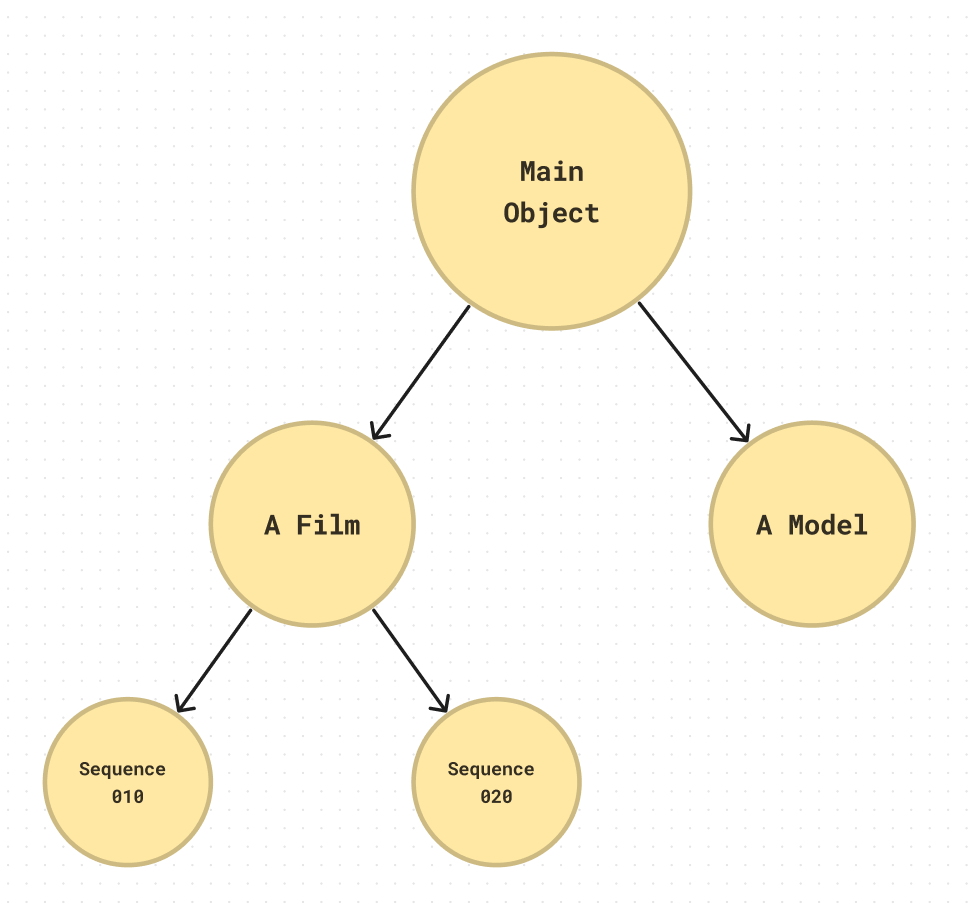

What is omoospace?
Omoospace is a scalable directory structure solution for digital creation works. Its aim is universality, flexibility, and annotation. Not only for large projects and teamwork, but also for small projects and solo works. Whether it is a 3d modeling task or a series production, it all fits 😊.
Overview
The rules are simple:
- Naming everything with PascalCase.
-
5 main directories:
SourceFilesstores source files of the software.Contentsstores digital content in common format.ExternalDatastores data from external sources.Referencesstores reference resources (optional).StagedDatastores temporary data (optional).
-
Subdirectories rules:
SourceFilessubdirectories are set by process names.Contentssubdirectories are set by content types.
-
Set Subspaces by filename prefix or subdirectory based on creation objects.
- Write the project profile into Omoospace.yml. Such as creators, software versions, etc.

A diagram illustrating the structure of omoospace
Omoospace Structure
Subspace
Subspace is a sub-workspace based on creation objects, which is conducive to finding, sorting and understanding. Subspace can be nested, for example, an anime series project, each episode is a creation object, and under that object, multiple secondary objects can be set based on episode’s sequences, and each secondary object can continue to be split. Each object is a sub-workspace of the main workspace. We call those sub-workspaces as "Subspace", and they are named after their objects.
It is conceivable that the nested subspaces can generate a tree-like graph which presents the structure of the entire project, as shown in the figure below.

So how to set subspace? And what is worth noting when setting subspaces?
Subspace can be set by filename prefix or subdirectory
The phrases that separated by _ are subspaces, for example:
It is obvious that this blender file is for creating Asset A (AssetA) of Sequence 010 (SQ010) of Episode 001 (EP001). The nested subspaces form a route from parent to child: EP001 > SQ010 > AssetA. We call it Subspace Route.
You can also use subdirectories instead of filename prefix. In order to distinguish Subspace Directory from ordinary directories, subspace directory must contain a marker file named Subspace.yml.
|-- SourceFiles
| `-- EP001
| |-- Subspace.yml # marker
| `-- SQ010
| |-- Subspace.yml # marker
| `-- AssetA.blend
The subspace route above is also EP001 > SQ010 > AssetA.
Subspace is concept, its existence is relied on files or directories. We call those files and directories Subspace Entities of their subspace. As you can imagine, one subspace may have multiple entities to present them.
|-- SourceFiles
| `-- EP001
| |-- Subspace.yml # marker
| |-- EP001.blend
| |-- SQ010.prproj
| `-- SQ010.blend
File SQ010.prproj and file SQ010.blend are both for Sequence 010 (SQ010). They are its subspace entities. Similarly, directory EP001 and file EP001.blend are both Episode 001 (EP001)'s entities. According to their entities, subspaces are classified into three kind:
- Directory Subspace has a directory to present it.
- File Subspace has only files to present it, no directory.
- Phantom Subspace has no direct content in its files.
Note
The file EP001_SQ010_AssetA.blend only contains Asset A object. EP001, SQ010 are just pure concepts. They are phantom subspaces
A subspace route is formed by subspace directory and filename prefix together.
A subspace route of entity is formed by all its parent subspace directory and name prefix. If the entity name prefix contains its parent subspace name. They should overlap each other as much as possible, for example:
All examples' route are all EP001 > SQ010 > AssetA
Note
There is no strict rules of when to use overlapping form of directory structure. It all up to user's decision. Creators should design the directory structure to fit the project needs.
A subspace name should not be pure number or version or autosave.
For example, EP001_SQ010_AssetA_v001.blend, v001 is definitely not a new object. The file is still for creating AssetA. According to the definition of subspace, a subspace is for a certain creation object, therefor v001 is not a subspace.
Numbers, version, autosave semantic are not for new object, so they should not as subspace name.
Write the subspace profile into Subspace.yml.
Besides as marker file, Subspace.yml also stores profile info.
You can create the profile file to any kind of subspace with route as its filename.
|-- SourceFiles
| |-- EP001
| | |-- Subspace.yml
| | |-- SQ010.yml
| | |-- SQ010_AssetA.yml
| | `-- SQ010_AssetA.blend
# SQ010.yml
name: Sequence 010
description: The beginning scene of the story.
# SQ010_AssetA.yml
name: Asset A
description: A 3d model.
SourceFiles
It stores the source files of the software, or executable scripts, pipelines, etc.
SourceFiles stores processes, and Contents stores results. The former needs to be opened with specific software or executed by the program and need to be precomputed. The latter generally allows cross-software reading, and without any pre-computation.
For example, using Blender's geometry node for procedural modeling. The source file of blender should be placed in SourceFiles. However, in order to load the procedural model in Unity, it is necessary to export as a general format, such as .fbx, and the exported file should be placed in Contents.
Subdirectories by process name (optional)
When project grows, you may need to seprate large mount of source files into directories. Besides subspace directory, we recommend set subdirectories by process name.
Some optional process name:
# Film production processes
|-- SourceFiles
| |-- PreProduction
| |-- Production
| `-- PostProduction
# Post-production subprocesses
|-- SourceFiles
| |-- Compositing
| |-- SoundEditing
| `-- VideoEditing
# 3D modeling processes
|-- SourceFiles
| |-- 001-Modeling
| |-- 002-Texturing
| |-- 003-Rendering
| `-- 004-Shading
Process directories and subspace directories can be mixed.
<SeriesTitle> # (Root)
|-- SourceFiles
| |-- PreProduction
| | `-- <ModelName> # (Root) > <ModelName>
| `-- <Episode> # (Root) > <Episode>
| |-- Subspace.yml
| |-- Production
| `-- PostProduction
Process subdirectories should fit your own workflow. But be aware of the following rules:
- Pay attention to the naming style. It should be a gerund for the process. For example, not "Models" but "Modeling", not "Scenes" but "SceneAssembling". In this way, the Process is emphasized, not the result.
- You can adjust the process subdirectories freely as the project expands.
Put source files without creation object under Void (optional)
Most source files have its object, such as rendering images or export a 3D model. However, some source files are not used as the main process and have no certain object, but have storage needs. We put such source files in a special subspace called Void, which don’t need Subspace.yml.
Note
Any subspaces in Void are also Void Subspace.
Void subspace can be in filename prefix or as directory.
|-- SourceFiles
| |-- BeatingHeart
| | `-- Void_HowToBeat.hip
| |-- Void_RnD_MetaBall.blend
| |-- Void
| | `-- MaNan.hip
Note
Although the source files under void subspace have no creation objects, they still allow outputing. However their outputs are not rigorous and necessary, but somewhat experimental and temporary. For example, Void/HeartBeating.blend can still render Void_HeartBeating.0001.png. The prefix Void indicates the results are experimental.
SourceFiles structure are always dynamic when project in progress.
As mater of fact, no one knows exactly what to do or how to do their creation. Plans never keep up with flashing of inspiration. Creation objects always changing in progress. Although we make a rule for SourceFiles subdirectories, but it's for semantic structure, it does not mean subdirectories should be static.
Feel free to organize files in SourceFiles, following the inspiration during creation.
Contents
It stores digital content in a common format, whether it is a work result or a resource, whether it is an internal or external. All files in here are organized to rules.
Subdirectories by content type (optional)
Some optional content type:
# For short video production propose
|-- Contents
| |-- Audios
| |-- Dynamics
| |-- Images
| |-- Materials
| |-- Models
| |-- Renders
| `-- Videos
# For film production propose
|-- Contents
| |-- Audios
| |-- Dynamics
| |-- Fonts
| |-- HDAs # Houdini Digital Assets
| |-- Images
| |-- Materials
| |-- Models
| | |-- Characters
| | |-- Nature
| | |-- Props
| | `-- ...
| |-- Presets
| |-- Renders
| |-- Scenes
| |-- ScientificData
| |-- Scripts
| |-- Settings
| |-- Shaders
| `-- Videos
Type subdirectories should fit your own workflow. But be aware of the following rules:
- Pay attention to the naming style. Should be the plural of the content type noun.
- To avoid confusion and misplacement, try to merge similar content types into one.
- It is not recommended to set multi-level subdirectories, nor to add more type subdirectories as the project expands.
The output of source file is named after its source file subspace route.
There is no subspace directory setting in Contents. But use subspace route as filename prefix to hint the relationship to its source file.
|-- Contents
| `-- Models
| |-- BloodCells_RBC.fbx
| `-- BloodCells_WBC.fbx
|-- SourceFiles
| `-- BloodCells.blend
In the above example, BloodCells_RBC.fbx BloodCells_WBC.fbx are coming from BloodCells.blend. RBC, WBC are subsets of BloodCells.blend. You can easily guess the relationship between them by their filenames.
In some cases, a content is a collection of multiple files. e.g. a 3d model with textures, or an image sequence of render output. The name of those sub files is not necessary contains route name, as they keep together with their main directory, which already hint its source. For example:
|-- Contents
| `-- Models
| `-- Organs_Heart
| |-- Organs_Heart.fbx
| `-- Textures
| |-- Heart_Roughness.png
| `-- Heart_BaseColor.png
|-- SourceFiles
| `-- Organs.blend
The texture filename has no need to have Organs, because you wouldn't use textures without the mesh. However, it does not mean the full route name is forbidden for sub files, or you can them whatever you want, either. Their filenames must have certain semantics.
Keep Contents structure flat and static as much as possible.
In most operating system, when file changes its name or being moved, the link will be lost. The content files, always as IO paths for source files, need to be stability. So, Contents should be centralized, and its structure should be flat and static, which means you should not move content files frequently or make a super complex multi-level subdirectories changes frequently. Plan the structure ahead.
ExternalData
It stores all data files from external sources. The “external” here means that it is not generated by the creator of this Omoospace, and not produced within this Omoospace, either. The most common usage of ExternalData is to store resources from network. You can also put your own 3D assets' library directory into ExternalData as a soft link.
No need to follow the naming rules, do not set any type subdirectories
Just keep its original file structure and naming style. For example:
|-- ExternalData
| |-- www.models.com_CT_Scanner
| | |-- CT_Scanner.fbx
| | `-- tex
| |-- textures_pack-4k
| | |-- wood
| | `-- metal
| |-- MyResources
| | |-- Textures
| | |-- Materials
| | `-- Models
Note
Do not put files at root directory of ExternalData, always under subdirectory.
It is not the only repository for all external data
Contents and SourceFiles also store external data. However, compared with ExternalData, they are stricter, all files need to be categorized and renamed properly. Meanwhile, ExternalData is a storage place that allows users to shipping data freely.
For external source data, if it has been stored in Contents | SourceFiles, it has no need to be stored in ExternalData again. For example, a HDRI downloaded from the PolyHaven, as long as it is renamed to PascalCase style, it could be directly put under Contents.
Note
Categorizing, renaming are not fun works, so it is recommended to store external source data directly into ExternalData unless you can ensure files under Contents | SourceFiles strict to the rules.
It stores resource library contents outside omoospace by soft link.
You may have your own resource library for different kinds of 3D assets in local directory or network directory (NAS). In most times, you don't know what asset suits the 3D scene most until you try, like HDRI. It is annoying shipping resource file from library to current working directory repeatedly just for trial.
So we prefer create a soft link to the library, then you can easily access the assets from library.
D:
|-- Resouces # My super 3D resouce library for everything
| |-- Models
| | |-- Cars
| | |-- Animals
| | |-- Plants
...
It stores omoospace packages
Package is an Omoospace data package designed for sharing. The imported package will be stored in ExternalData. The source file can directly use the files here.
|-- ExternalData
| |-- BloodCells # Package
| | |-- Package.yml # Package info
| | |-- Contents
| | | `-- Models
| | | `-- RedBooldCells_RBC.fbx
| | `-- SourceFiles
| | `-- RedBooldCells.blend
References
It stores PureRef, Figma, Paper PDF, Storyboard. Although they will not be used directly by the source file, but still need to be saved. Put them here.
Tip
If it is figma online, put the link as file.
StagedData
It stores any software-generated data that can be rebuilt after deletion, such as temporary files, caches, software bridging files, etc. There is no need to browser StagedData unless necessary.
Directory structure automatically generated by software.
Omoospace.yml
It stores profile info such as creators, software versions, etc.
name: Omoospace's name
description: A brief of this Omoospace (Optional)
creators: # Creator list of this Omoospace
- name: Creator's name
email: Creator's email (Optional)
role: Creator's role in this Omoospace (Optional)
website: Creator's website (Optional)
softwares: # Software list of this Omoospace
- name: Software's name
version: Software's version
plugins: # Plugins list of this Omoospace (Optional)
- name: Plugin's name
version: Plugin's version
works: # Work list of this Omoospace
- name: Work's name
itmes:
- Work's path under Contents
For example:
name: my project
description: An omoospace for creation works
creators:
- name: manan
email: icrdr@abc.com
website:
role: Owner
softwares:
- name: Blender
version: 3.6.4
plugins:
- name: Zbrush
version: 2023.2
plugins:
- name: Substance 3D Painter
version: 9.0.0
plugins:
works:
- name: MyModel
itmes:
- MyModel
Omoospace Package
Inspired by Unity Package, Package is an Omoospace data package designed for sharing.
ExternalData acts like a Packages of Unity project, that storing data from other Omoospaces.
Unity - Manual: Reusing Assets between Projects
The internal structure of Package is part of its source Omoospace
<PackageName>
|-- Contents # (Optional)
|-- ExternalData # (Optional)
|-- References # (Optional)
|-- SourceFiles # (Optional)
|-- StagedData # (Optional)
|-- README.md
`-- Package.yml # Package info
# Package.yml
name: Package's name
version: Package's version
description: A brief of this Package (Optional)
creators: # Creator list of this Package
- name: Creator's name
email: Creator's email (Optional)
role: Creator's role in this Omoospace (Optional)
website: Creator's website (Optional)
Note
Once Package is exported, it has nothing to do with its source Omoospace
Comparison with other software project structures
There are some common concepts to help understand.
| Omoospace | Unity | Unreal Engine |
|---|---|---|
| Contents | Assets | Content |
| ExternalData | Packages | |
| References | ||
| SourceFiles | Assets | Source, Content |
| StagedData | Temp | Intermediate, Saved, DerivedDataCache |
| Omoospace.yml | PorjectSetting | Config |
Q&A
-
Q: Most directory structure solutions of CG work have no distinction between
ContentsandSourceFiles. Why Omoospace emphasize their differences ?A: This is due to the different purposes of them. The content files, always as an IO path, need stability. So,
Contentsshould be centralized, and its structure should be as flat as possible. Meanwhile, the source files, as entries of human operations, need accessible. People split their works by processes and objects, which are the best subdirectory rule ofSourceFiles. Therefore, it is better to isolate the source files that store "processes" and the content files that stores "results". -
Q: Why
Contentshas no subspace directories?The previous answer has explained the different purposes of
ContentsandSourceFiles. Although theContentsstructure should be as flat as possible. But in order to avoid duplicate names, Subspace Prefixes are used.SourceFiles, on the other hand, sets up Subspace Directories for ease of finding. -
Q: Why does the Omoospace.yml field not using PascalCase style?
Because the official tool is written by shell. The field style should be snake_case.